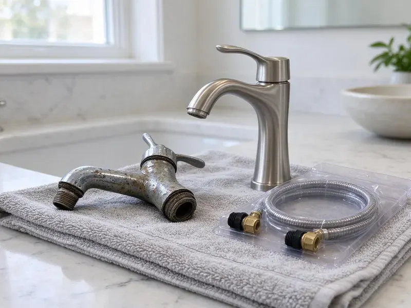

Sewer Replacement in Joplin, MO
Sewage smell in the yard or a soggy spot over the line? That is often a cracked sewer pipe. We replace them in Joplin, MO.
- New Cleanout Included
- Same-Week Scheduling
- Flat Pricing
- Written Estimates

Need a New Sewer Line in Joplin, MO?
New pipe, correct fall, and a cleanout you can actually reach.
Sewer Replacement in Joplin, MO With Trenchless and Traditional Methods
A camera goes in before any shovel does. FGV Plumbing records the line, locates every crack, belly and root intrusion with a sonde, and shows you the footage so you can see why we are recommending replacement in Joplin instead of another round of cleaning. Pictures settle arguments.
Work we handle every week:
- Trenchless pipe bursting using fused HDPE
- Swapping clay and cast iron for PVC
- Open-trench PVC with steady fall and bedding

Additional Plumbing Replacement Services in Joplin, MO
When repairs are no longer enough, our replacement services in Joplin, MO deliver durable upgrades that restore full performance.


Customers
Why Choose FGV Plumbing for Sewer Replacement in Joplin, MO?
Slope is where replacements go wrong. Too flat and solids settle. Too steep and water outruns the waste, and either way you end up with clogs on brand new pipe, which is why grade gets checked with a level and again with the camera. A quarter inch per foot is the usual target.
- Camera First, We scope the line and show you the footage before we quote the job.
- Right Tools, Sonde locators, pipe bursting rigs and fusion machines for HDPE come with the crew.
- Licensed Plumbers, Our crews are fully licensed and carry insurance for sewer work.
Citywide Coverage
Wherever your house sits in Joplin, the job starts the same way, with a camera at the cleanout. If there is no cleanout, we install one. From there the footage and the locator tell us the route and depth, and the price matches what is in the ground. No guess pricing.
Experienced Team
Our crews do sewer replacements nearly every week. That repetition matters. They know how to protect sprinkler lines in the path, how to work near gas and electric marks safely, and how to leave a trench that settles flat instead of leaving a dip.
Safety-First Approach
A trench wall can cave in a second. We keep spoil at least two feet back from the edge, use a trench box or slope the walls on deeper digs, and keep a ladder in any trench a person climbs into. Rules exist for good reason.
Trusted Certified Joplin Plumbing Services Professionals
At FGV Plumbing, we take pride in licensed, certified plumbing services throughout Joplin, MO. Credentials matter in this trade. Our plumbers hold recognized industry credentials, and they follow strict safety and quality rules on every repair, installation and maintenance call we run.
Call Us Now PHCC Plumbing Contractor Recognition
PHCC Plumbing Contractor Recognition Better Business Bureau (BBB) Accreditation
Better Business Bureau (BBB) Accreditation Angi Certified Pro
Angi Certified Pro ISO 9001 Quality Management Certification
ISO 9001 Quality Management CertificationSewer Line Replacement Options in Joplin, MO
Residential Sewer Replacement in Joplin, MO
Most house laterals run 30 to 100 feet. Depth varies a lot. We measure both before quoting, check whether the run passes under a driveway, porch or tree, then pick trench or trenchless based on what is in the way, so the estimate you sign is the price you pay.

Trenchless Pipe Bursting in Joplin
Bursting works best on clay, cast iron and Orangeburg. A hydraulic rig at the receiving pit pulls the bursting head through the old line, splitting it into the soil, while a continuous length of fused HDPE follows behind which leaves a single joint-free pipe in the ground. Roots cannot get into a joint that does not exist.
Traditional Trench Sewer Replacement in Joplin
An open trench gives full access to the pipe from the house to the main. We dig with a mini excavator and hand dig near utility marks. The old pipe comes out, the trench bottom gets a bed of gravel or sand, and new 4-inch PVC goes in at a steady quarter inch of fall per foot, checked with a level before backfill. Then the camera.
Advanced Diagnostics for Sewer Issues in Joplin, MO
Diagnosis comes before price. The camera shows what is wrong, the locator shows where. We sometimes add a hydro-jet cleaning first, because a line full of grease can hide a crack, and a clean pipe gives a much more honest picture of its condition. Guesswork costs money.
Open-Trench Sewer Replacement in Joplin, MO
Trenching lets us fix grade. That is its big advantage. When an old line has a sag that holds water and solids, bursting would just follow the same sag, while a trench lets us lay new pipe at the right pitch. Bellies disappear.
Foundation Protection during Sewer Replacement in Joplin, MO
Limestone and rocky ground in the southern part of the state can make digging for sewer lines slower and more costly. A sewer leaking under or beside the house keeps the soil wet in one spot, and that uneven moisture can push or settle part of a slab. When we replace a line near the foundation we dig carefully, avoid undermining footings, and compact the backfill in lifts. Slow work near the house.
Addressing Tree Root Intrusions in Joplin, MO
Roots find sewer lines by following moisture. A hairline crack is enough. Once inside, they grow into a mat that catches paper and grease, and cutting them out with a machine only buys a few months, because the opening is still there. New PVC with glued joints gives them no way in.

Under-Slab Sewer Replacement in Joplin
Sewer pipe under a slab is the hardest kind to reach. There are two options. We can cut and remove a strip of floor inside the house and patch it after, or tunnel under the slab from outside so the floors stay intact, and the right choice depends on the length of the run, the flooring, and what sits above the pipe.
Local Sewer Replacement Near Me in Joplin, MO
A local crew can come back for the inspection. On sewer jobs that is a big deal. The trench usually has to stay open until the inspector signs off, so we plan our schedule in Joplin around the inspector's visit and keep the hole covered, fenced and marked overnight until it passes.
Local plumbers know local sewer layouts. Some laterals run out the front, some out the back to an alley. That affects depth, length and which method fits, and in Joplin we often know it before the truck pulls up. We still camera everything.
FGV Plumbing at a Glance
- Licensed and insured plumbers serving Joplin, MO
- Same-day appointments and 24/7 emergency response
- Clear written estimates, no hidden fees
- 4.9-star rated by 307+ Missouri customers
Joplin Map
Joplin Information
- Population
- 53,095
- Area codes
- 417/573/620
- Service area
- Joplin and towns within a 40 mile drive
- Nearby
- Springfield, Lee's Summit, Blue Springs, Independence
Clay and cast iron sewer pipe eventually cracks and fills with roots after enough decades, and no amount of snaking fixes that.
Expert Services
Call FGV Plumbing for reliable plumbing work done by licensed pros in Joplin, MO.
Our Specialized Plumbing Services in Joplin, MO
At FGV Plumbing, we handle the full list of plumbing services across Joplin, MO. From leak detection to full system installs, our team works fast and charges fair prices on homes and commercial properties alike. Take a look at our core services below:


Our Sewer Replacement Process in Joplin, MO
From the first scope to the final footage, FGV Plumbing keeps you posted at every stage.
Call Us
Call (816) 330-2338 and tell us what is happening. We book a camera inspection.
Scope and Plan
We scope the line and mark the breaks. Then we choose the method.
Replace and Test
We install the new line, test it with water and restore the yard. A final camera pass confirms it.
Frequently Asked Questions About Sewer Replacement in Joplin
The range is wide. Most jobs fall between $3,000 and $25,000 or more. Length and depth move the number most, followed by soil conditions, method, and what sits over the line, like a driveway or a slab. We price it after the camera inspection, in writing.
No. Bursting needs an open path through the old pipe. A fully collapsed section, a sharp bend, or rock around the pipe can rule it out, and a belly cannot be fixed by bursting since the new pipe follows the same sag, which means a trench is the answer for bellies. Camera first.
We buy from major PVC makers like JM Eagle and Charlotte Pipe, and HDPE from established manufacturers that supply municipal sewer work. Fernco and other shielded couplings handle transitions. Everything is listed for underground drainage.
Snaking clears a blockage. It does not fix the pipe. If the backup returns every few months, the line usually has a root entry, a belly that collects solids, or a broken section that catches paper, and a scope shows us the cause. That decides repair or replacement.
Repeated backups, gurgling and sewage smell. Camera footage of breaks confirms it.
Solid-wall PVC for open trench work, in Schedule 40 or SDR 35. Fused HDPE is the standard for pipe bursting because it can be pulled a long way without joints, while cast iron or ABS appear in special cases. All rated for burial.
Rarely. Roots need a gap, and sealed joints do not have one.
Technically, maybe. It needs a permit, locates and correct slope.
What People Are Saying About Our Plumbing Experts?

Carlos V.
Our house still had galvanized pipe, and upstairs the shower was a trickle. The crew repiped everything in PEX over three days and patched every drywall hole before they left. The pressure difference is night and day.
Repiping · Lee's Summit, MO
Patricia H.
We had a slab leak that two other companies could not find. FGV Plumbing located it in under an hour with a listening device. They rerouted the line through the attic instead of breaking up the floor, so we kept our kitchen tile.
Slab Leak Repair · Kansas City, MO
Rachel N.
Hard water was leaving white crust on every faucet and our dishwasher was struggling. The tech tested the water, recommended a softener sized for a family of five, and installed it with a bypass valve in one afternoon. The spots on our glasses are gone.
Water Softener · Blue Springs, MONathan E.
Our tankless heater kept throwing an error code and shutting off mid shower. The tech flushed the heat exchanger, which was full of scale, and replaced a bad flow sensor. Hot water has been steady for half a year now.
Water Heater Repair · Joplin, MOEmily R.
The shutoff valve under our kitchen sink snapped off in my hand on a Sunday morning. FGV Plumbing had someone out by early afternoon. He replaced both angle stops with quarter turn valves and showed me where our main shutoff was, which I honestly did not know.
Plumbing Repair · Liberty, MOAngela D.
Our sump pump quit during a storm and the water was an inch from the basement carpet. FGV Plumbing put in a new pump with a battery backup that same evening. We have had two heavy rains since. It kicked on both times.
Sump Pump · Lee's Summit, MO